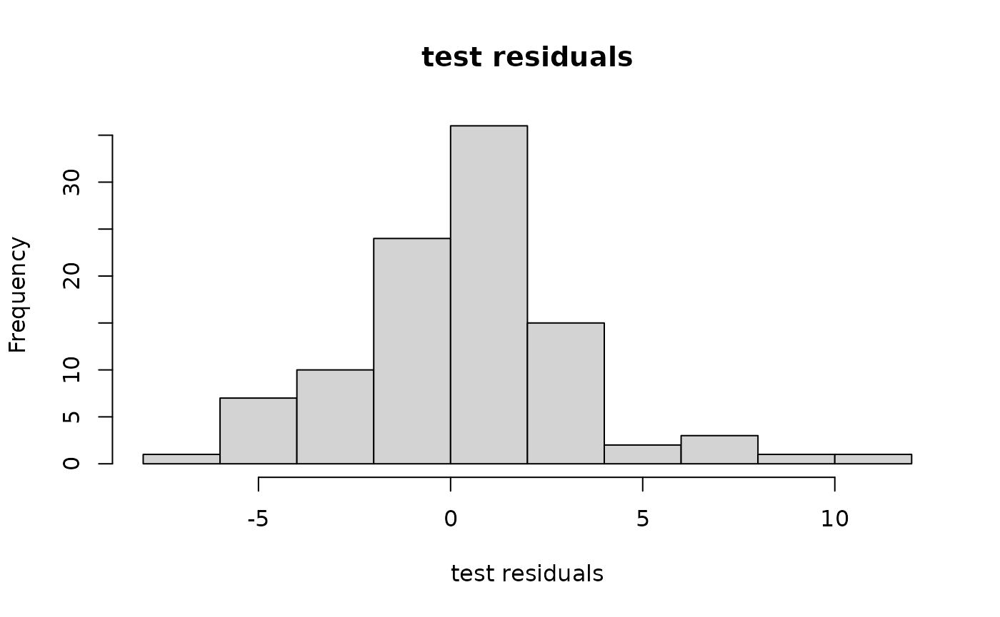
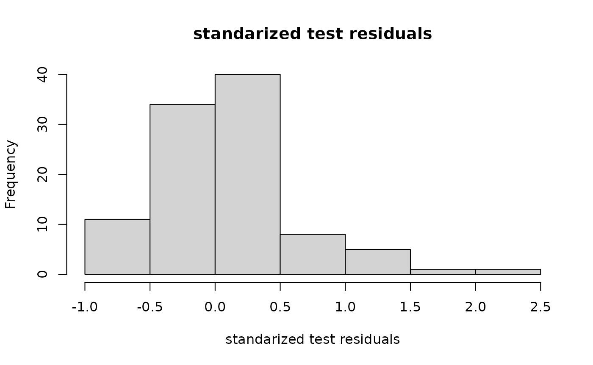

Covariance functions
sampsize = 20
d = 3
design1d = seq(1/(2*sampsize),1-1/(2*sampsize),1/sampsize)
x = cbind(design1d,sample(design1d),sample(design1d))
y = obtest_borehole3d(x)
testsampsize = 100
xtest = matrix(runif(testsampsize*d),ncol=d) #prediction points
ytest = obtest_borehole3d(xtest)
corf1 = new(covf_mat25)
?covf_mat25
cormat1 = corf1$cov(x[,1],x[,1])
print(cormat1[1:5,1:5])
#> [,1] [,2] [,3] [,4] [,5]
#> [1,] 1.0000000 0.9995836 0.9983373 0.9962695 0.9933933
#> [2,] 0.9995836 1.0000000 0.9995836 0.9983373 0.9962695
#> [3,] 0.9983373 0.9995836 1.0000000 0.9995836 0.9983373
#> [4,] 0.9962695 0.9983373 0.9995836 1.0000000 0.9995836
#> [5,] 0.9933933 0.9962695 0.9983373 0.9995836 1.0000000
corf1$hyp
#> [,1]
#> [1,] 0Gaussian processes
corf2 = new(covf_mat25)
corf3 = new(covf_mat25)
corf2$hyp = c(-0.5)
corf3$hyp = c(-0.5)
covftot = function(x1,x2){
corf1$cov(x1[,1],x2[,1])*
corf2$cov(x1[,2],x2[,2])*
corf3$cov(x1[,3],x2[,3])
}
cormattot = covftot(x,x)
hist((ytest-yhat), main="test residuals",
xlab = "test residuals")
sigma2hat = as.double( t(y) %*% solve(cormattot,y) / length(y))
varpred = sigma2hat * (covftot(xtest,xtest) - t(covftot(x,xtest)) %*%
solve(cormattot,covftot(x,xtest)))
hist((ytest-yhat)/sqrt(diag(varpred)), main="standarized test residuals",
xlab = "standarized test residuals")
mod and base
outermod
om = new(outermod)outerbase
outerbase is the equivalent of a basis matrix with fast computation built in
ob = new(outerbase,
om, #give it the outermod (reference)
x) #give it the input matrix
basis_func = ob$getbase(1)
matplot(x[,1],basis_func[,1:4],
type='l', ylab="func", xlab="first dim")
outermod and outerbase
p = 60
terms = om$selectterms(p)
print(terms)
#> [,1] [,2] [,3]
#> [1,] 0 0 0
#> [2,] 0 1 0
#> [3,] 0 0 1
#> [4,] 1 0 0
#> [5,] 1 0 1
#> [6,] 1 1 0
#> [7,] 0 1 1
#> [8,] 2 0 0
#> [9,] 0 2 0
#> [10,] 0 0 2
#> [11,] 1 1 1
#> [12,] 0 2 1
#> [13,] 1 2 0
#> [14,] 2 0 1
#> [15,] 0 1 2
#> [16,] 3 0 0
#> [17,] 0 0 3
#> [18,] 2 1 0
#> [19,] 1 0 2
#> [20,] 0 3 0
#> [21,] 0 4 0
#> [22,] 4 0 0
#> [23,] 0 0 4
#> [24,] 1 3 0
#> [25,] 0 3 1
#> [26,] 1 1 2
#> [27,] 1 2 1
#> [28,] 0 1 3
#> [29,] 3 0 1
#> [30,] 3 1 0
#> [31,] 2 1 1
#> [32,] 1 0 3
#> [33,] 2 2 0
#> [34,] 0 2 2
#> [35,] 2 0 2
#> [36,] 0 0 5
#> [37,] 0 5 0
#> [38,] 5 0 0
#> [39,] 4 0 1
#> [40,] 0 1 4
#> [41,] 0 4 1
#> [42,] 4 1 0
#> [43,] 1 4 0
#> [44,] 1 0 4
#> [45,] 1 3 1
#> [46,] 1 1 3
#> [47,] 3 1 1
#> [48,] 0 6 0
#> [49,] 0 3 2
#> [50,] 2 3 0
#> [51,] 2 2 1
#> [52,] 1 2 2
#> [53,] 6 0 0
#> [54,] 3 2 0
#> [55,] 2 0 3
#> [56,] 0 2 3
#> [57,] 0 0 6
#> [58,] 3 0 2
#> [59,] 2 1 2
#> [60,] 0 1 5
basismat = ob$getmat(terms)
basevec = ob$getbase(1)[,terms[5,1]+1]*
ob$getbase(2)[,terms[5,2]+1]*
ob$getbase(3)[,terms[5,3]+1]
cbind(basevec[1:5],basismat[1:5,5])
#> [,1] [,2]
#> [1,] 1.0529318 1.0529318
#> [2,] -1.8226970 -1.8226970
#> [3,] -1.3984478 -1.3984478
#> [4,] 1.6516297 1.6516297
#> [5,] -0.8165232 -0.8165232
covcoeff = as.vector(om$getvar(terms))outerbase inference
cormatob = basismat %*% diag(covcoeff ) %*% t(basismat)
print(round(cormatob[1:5,1:5],4))
#> [,1] [,2] [,3] [,4] [,5]
#> [1,] 0.9997 0.7221 0.7353 0.7565 0.5492
#> [2,] 0.7221 0.9997 0.8876 0.4273 0.6162
#> [3,] 0.7353 0.8876 0.9997 0.5948 0.8570
#> [4,] 0.7565 0.4273 0.5948 0.9997 0.6184
#> [5,] 0.5492 0.6162 0.8570 0.6184 0.9997
print(round(cormattot[1:5,1:5],4))
#> [,1] [,2] [,3] [,4] [,5]
#> [1,] 1.0000 0.7221 0.7354 0.7566 0.5492
#> [2,] 0.7221 1.0000 0.8876 0.4273 0.6162
#> [3,] 0.7354 0.8876 1.0000 0.5947 0.8570
#> [4,] 0.7566 0.4273 0.5947 1.0000 0.6184
#> [5,] 0.5492 0.6162 0.8570 0.6184 1.0000Predictions and comparison
obtest = new(outerbase,
om, #give it the outermod (reference)
xtest) #give it the input matrix
basistest = obtest$getmat(terms)
yhatob = basistest %*% coeffest
par(mfrow=c(1,2))
plot(yhat,ytest, main = "typical gp")
plot(yhatob,ytest, main = "outerbase equiv.")
par(mfrow=c(1,2))
hist(ytest-yhat, main="typical gp",
xlab = "test residuals")
hist(ytest-yhatob, main="outerbase equiv.",
xlab = "test residuals")
varpredob = basistest %*% postcov %*% t(basistest)
par(mfrow=c(1,2))
hist((ytest-yhat)/sqrt(diag(varpred)), main="typical gp",
xlab = "standarized test residuals")
hist((ytest-yhatob)/sqrt(diag(varpredob)), main="outerbase equiv.",
xlab = "standarized test residuals")